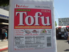
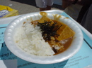
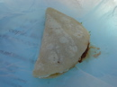
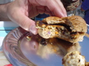
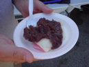
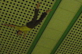

先週に引き続き、Toddに誘われて「TOFU FESTIVAL」へ。毎年、L.A.の日本人街リトル・トーキョーで催されている豆腐イベントです。マスコットキャラクタの「TOFU NINJA」がすでにいい感じに出来上がっています。
Toddとその彼女が「少し時間があるから美術館に寄って行こう」というのでついて行ったところ、行き先は「9/11」の記念展示。豆腐の前にどんよりと悲しい気分に。
TOFU FESTIVALでは、いきなりデッカい豆腐がお出迎えしてくれました。
フェスティバルは、豆腐カレー、豆腐タコス、豆腐バーガー、あんこ豆腐、など微妙に足を踏み外した豆腐の一口料理が売り買いされる中、ハイスクールバンドがNirvanaのコピー曲を演奏しているという、なかなかに味わい深い空間でした。カート・コバーンは豆腐のために死んだのかもしれない。
   小さなお祭りのため、すぐに一回りしてしまったので、その後、リトル・トーキョーを冷やかしました。お洒落なお店をちらほらと見らけましたよ。
ボランティアでまだ会場に残るというToddの彼女のために車を残し、Toddと僕はメトロで帰宅。実はL.A.の地下鉄は初めて乗るのでそれなりにワクワクです。改札口がなくて、警備のおじさんが適当に声をかけて切符を確認するという割とアバウトなシステム。フォームに降りると、天井からダイブする謎の人形がぶら下がっていました。あれは何を表現しているのか。
駅は、なんとなく名古屋の地下鉄の雰囲気に近かったです。桜通線とか東山線とか、そういう感じ。自分の物差しで世界を計ります。